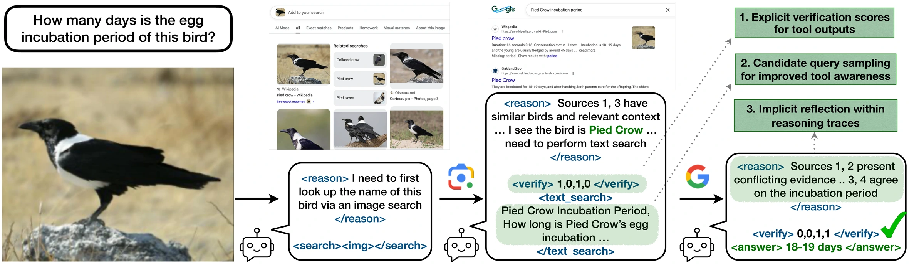
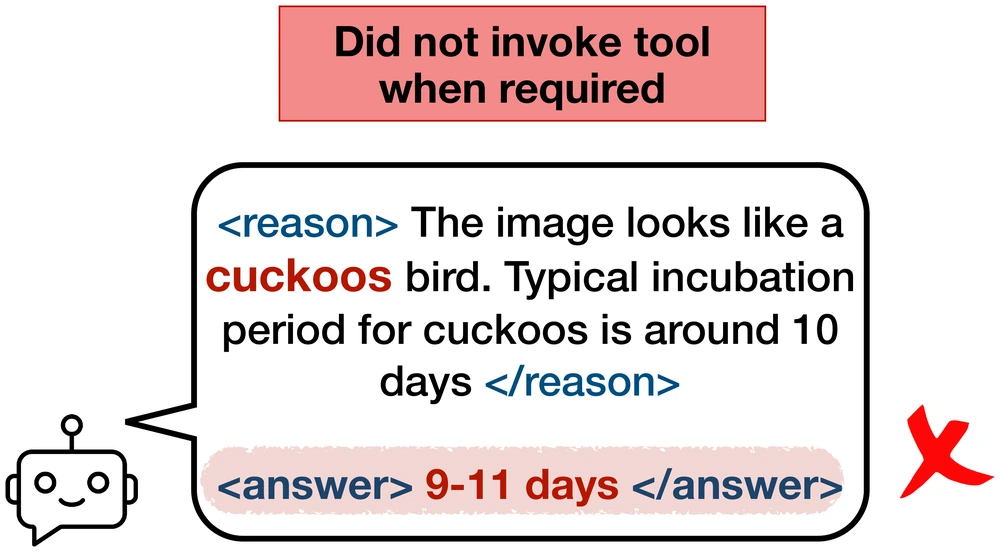
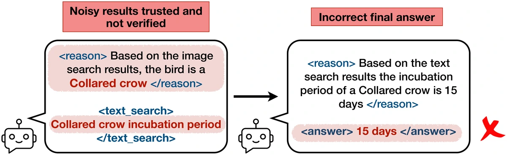
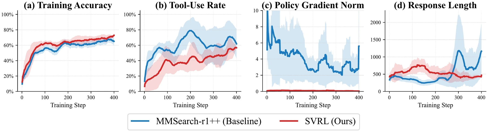
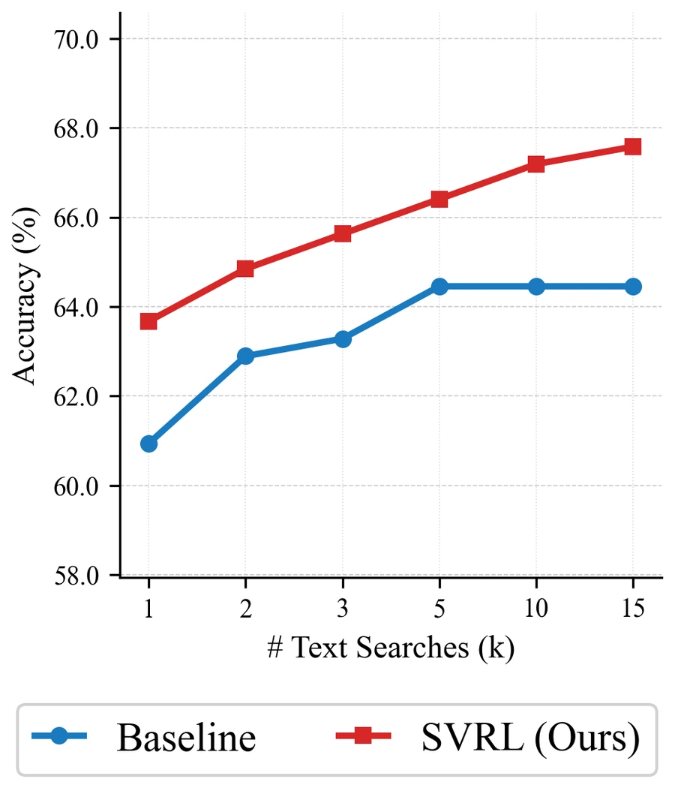

Eliciting Self-Verification in Multimodal Reasoning Agents with Reinforcement Learning
Abstract
Reasoning agents increasingly rely on external tools such as web search to answer complex queries. Reinforcement learning (RL) finetuning algorithms such as GRPO have improved long-form reasoning in text-only language models, particularly for coding and mathematics. Reliable tool use in multimodal agents, however, remains challenging because models must interpret text and images while integrating noisy retrieved evidence, often under sparse outcome-level supervision without explicit verification signals. We present Self-Verification via Reinforcement Learning (SVRL), an RL-only finetuning framework that trains multimodal agents to verify and filter retrieved evidence within their own reasoning traces, reducing reliance on external verifiers at inference time. SVRL also introduces a search-aware penalty that discourages unnecessary tool calls and a query-diversity reward that encourages diverse, well-formed search queries, providing fine-grained feedback on when and what to search. Finetuning Qwen-2.5-VL-7B with SVRL on only 5,000 visual question answering examples yields consistent gains in multi-hop VQA generalization and tool efficiency across benchmarks. Overall, SVRL narrows the gap between compact agents and much larger proprietary models while requiring substantially lower training and inference cost.
Explore real reasoning traces with self-verification
Step through what the agent actually did: its reasoning, when it called a tool, what came back, which evidence it kept, and the answer it committed to. Switch models to see how the baseline handled the same question.
Video
Watch on YouTube →Methods

Fine-grained search control
Reward terms that discourage unnecessary tool calls and reward informative, diverse query proposals, giving feedback on both when to search and what to search for.
Self-verification for evidence filtering
The agent emits structured verification scores over retrieved items inside its own reasoning trace. Evidence selection becomes learnable, and applies at inference with no external verifier.
Stable optimization & test-time scaling
Dr. GRPO stabilizes training under trajectory-dependent rewards, and sampling more candidate search queries at inference keeps improving accuracy.
Why tool-augmented multimodal agents fail
Analyzing a GRPO-finetuned search agent on FVQA surfaces three recurring failure modes. First, agents are poorly calibrated about when to search: search was required but not invoked in over 10% of cases, while over 30% triggered unnecessary search. Second, tool outputs are noisy and go unfiltered. Nearly 45% of retrieved results were irrelevant, and the agent still answered incorrectly in over 28% of cases even when it issued an appropriate query and relevant evidence was present. Third, outcome-only supervision leaves every intermediate decision unlabeled, so distinct failure causes collapse into the same terminal penalty.


Algorithm
SVRL treats the multimodal agent as a stochastic policy over multi-turn trajectories and finetunes it with a GRPO-style objective, replacing the sparse trajectory reward with a product of fine-grained factors:
-
Search-aware calibration (
raware): a single tool-free forward pass labels each training instance assearch_freeor not, and rollouts that call a tool on asearch_freeinstance are downweighted. This targets avoidable searches without suppressing necessary ones. -
Query diversity (
rcount): the agent proposes k candidate queries and executes one; the fraction of unique, well-formed proposals scales the task reward. -
Verification alignment (
rqalign,rsalign): the agent emits a binary usefulness vector over retrieved items (e.g.<verify> 0,1,0,1 </verify>) plus a short justification. A train-time oracle verifier with access to the ground-truth answer scores the same queries and snippets, and the agent is rewarded for agreeing with it.
The verification factors are gated on final-answer correctness to avoid reward hacking, and the oracle verifier is discarded at inference. The deployed agent verifies on its own.
Algorithm 1 · SVRL finetuning
Require: Dataset 𝒟, system prompt 𝒮, train-time verifier 𝒢, policy πθ, search tools 𝒯, format weight α, group size G
- Self-labeling.
- for all (I, q, y*) ∈ 𝒟 do
- ŷ ← πθ(𝒮, I, q)single pass; no tool calls
- ℓ(I, q) ← 𝟙[ŷ = y*]1 iff
search_free - end for
- RL finetuning with Dr.GRPO.
- while not converged do
- Sample minibatch B ⊂ 𝒟
- for all (I, q, y*) ∈ B do
- Sample rollouts {τ(i)}Gi=1 ∼ πθold(· | 𝒮, I, q; 𝒯)
- for i = 1 to G do
- Parse τ(i) → (y, p, v)answer, tool params, self-verification
- v* ← 𝒢(I, q, y*, p)train-time verification labels
- rsvrl ←
search_aware(ℓ(I,q), τ(i)) ·query_count(τ(i))search calibration - rsvrl ← rsvrl ·
query_align(v, v*) ·snippet_align(v, v*)verification alignment - r(i) ← (1 − α) ·
acc_score· rsvrl + α ·format_score - end for
- Update θ using {(τ(i), r(i))}Gi=1group advantages + Dr.GRPO objective
- end for
- end while
Results
We train Qwen-2.5-VL-7B-Instruct on 5,000 FVQA examples and evaluate in-distribution (FVQA-test, InfoSeek) and out-of-distribution (MMSearch, LiveVQA, SimpleVQA). Acc is answer accuracy; SR is search ratio, the fraction of questions on which the agent chose to search.
| Model | FVQA-test | InfoSeek | MMSearch | LiveVQA | SimpleVQA | |||||
|---|---|---|---|---|---|---|---|---|---|---|
| Acc | SR | Acc | SR | Acc | SR | Acc | SR | Acc | SR | |
| Direct answer | ||||||||||
| Qwen-2.5-VL-7B | 26.7 | 0.0 | 20.1 | 0.0 | 12.8 | 0.0 | 17.8 | 0.0 | 38.4 | 0.0 |
| Qwen-2.5-VL-32B | 24.7 | 0.0 | 25.8 | 0.0 | 15.7 | 0.0 | 18.7 | 0.0 | 40.1 | 0.0 |
| Qwen-2.5-VL-72B | 27.1 | 0.0 | 28.0 | 0.0 | 15.7 | 0.0 | 20.1 | 0.0 | 42.2 | 0.0 |
| GPT-4o | 41.7 | 0.0 | 42.7 | 0.0 | 22.2 | 0.0 | 26.9 | 0.0 | 46.6 | 0.0 |
| RAG workflow | ||||||||||
| Qwen-2.5-VL-7B | 51.6 | 100 | 53.7 | 100 | 52.2 | 100 | 48.0 | 100 | 51.6 | 100 |
| Qwen-2.5-VL-32B | 57.0 | 100 | 56.8 | 100 | 57.9 | 100 | 49.6 | 100 | 54.5 | 100 |
| Qwen-2.5-VL-72B | 62.2 | 100 | 59.4 | 100 | 59.6 | 100 | 56.0 | 100 | 61.0 | 100 |
| GPT-4o | 66.0 | 100 | 59.1 | 100 | 62.5 | 100 | 59.6 | 100 | 63.4 | 100 |
| Adaptive search | ||||||||||
| MMSearch-R1++ | 56.4 | 80.3 | 55.1 | 59.7 | 53.8 | 88.5 | 48.4 | 76.2 | 57.4 | 42.5 |
| SVRL-full-7B | 65.3 | 61.4 | 64.7 | 52.3 | 60.3 | 82.0 | 57.8 | 48.6 | 58.3 | 27.0 |
over the best adaptive-search baseline
at a lower search ratio
7B parameters, no external verifier
Additional results
Training dynamics

Test-time scaling
On a 256-example subset of FVQA-test we allow up to K parallel text searches per question. SVRL already proposes up to five candidate queries within one reasoning step, so increasing K first uses those directly and then samples additional proposals at gradually higher temperature. Candidate answers are aggregated by exact majority, falling back to a nearest-neighbour consensus over answer embeddings.

Search calibration
Splitting FVQA by whether the agent chose to search shows the gain is not just from searching more. SVRL searches considerably less and is more accurate on both subsets.
| Metric | MMSearch-R1++ | SVRL |
|---|---|---|
| Used search | 1445 (80.3%) | 1105 (61.4%) |
| Accuracy on search subset | 51.0% | 56.4% |
| No search | 355 (19.7%) | 695 (38.6%) |
| Accuracy on no-search subset | 78.6% | 79.4% |
| Overall accuracy | 56.4% | 65.3% |
At inference the model generates an average of 4.86 unique queries per text-search step, so the policy does not collapse to a single repeated query template despite the fixed five-query interface.
Where the errors go
Conditioning on cases where an external judge rates the issued query as good, SVRL still improves, so the gains extend past query generation into downstream evidence use.
| Condition | MMSearch-R1++ | SVRL |
|---|---|---|
| Good query → wrong answer | 38.4 | 33.7 |
| Good query + useful result → wrong answer | 33.8 | 29.1 |
| Good query → no useful result | 8.3 | 6.9 |
How good is the learned verifier?
Comparing the agent's own <verify> mask against oracle filtering
labels over all retrieved summaries, agreement is 71.3%. The disagreements are strongly
asymmetric: the learned filter is conservative, rarely discarding useful
evidence but frequently keeping noise.
| Metric | Value |
|---|---|
| Total snippets scored by both | 5490 |
| Agreement | 3913 / 5490 (71.3%) |
| Both relevant | 2851 |
| Both noise | 1062 |
| Under-filtered (kept, oracle says noise) | 1495 |
| Over-filtered (dropped, oracle says useful) | 82 |
A second backbone, and proprietary baselines
The same recipe applied to Qwen3-VL-8B performs comparably to SVRL-7B, so the gains are not tied to one backbone. Both SVRL variants also score above a much larger proprietary system in the search-based regime.
| Model | FVQA | InfoSeek | ||
|---|---|---|---|---|
| Judge | EM | Judge | EM | |
| Direct answer | ||||
| Qwen3-VL-8B | 22.2 | 15.4 | 22.2 | 13.9 |
| GPT-5.2 | 34.0 | 14.3 | 29.9 | 12.4 |
| Adaptive search | ||||
| MMSearch-R1++ | 56.4 | 40.6 | 55.1 | 30.4 |
| SVRL-7B | 65.3 | 43.0 | 64.6 | 41.7 |
| SVRL-8B | 64.9 | 40.2 | 64.0 | 36.5 |
| GPT-5.2-thinking | 60.8 | 21.2 | 52.2 | 15.8 |
System prompt & setup
The agent is prompted in a ReAct style: every tool call must be preceded by a
<reason> block, and after any tool call the next turn must emit a
binary verification mask before the following action. Each episode allows at most three
interaction steps (one image search and up to two text searches) within an
8124-token budget.
| Round | Model output |
|---|---|
| Round 1 | <reason> … need to perform image search. </reason><search><img></search> |
| Round 2 | <reason> Sources 1 and 3 are helpful … need to perform text search. </reason><verify> 1,0,1,0 </verify><text_search> q1, q2, q3, q4, q5 </text_search> |
| Final round | <reason> Sources 3 and 4 present … </reason><verify> 0,0,1,1 </verify><answer> 18-19 days </answer> |
Full system prompt used for search-based training and inference
System message.
You are a helpful assistant who will be evaluated on a Visual Question Answering
Task. You should strictly follow a reason-to-act process to answer a user-provided
question about an image. All thinking must be written inside <reason> and
</reason> tags.
Available actions.
First analyze the question and any available observations, including the
user-provided image and any retrieved search results. Then choose one of the
following actions: <search><img></search> to perform image search;
<text_search>query1, query2, query3, query4, query5</text_search> to generate
five unique relevant text queries, one of which is selected at random during
training; or <answer>xxxxx</answer> to return the final answer. If an action
was performed previously, output a binary relevance list containing as many comma
separated values as the number of tool output snippets like this:
<verify>0/1, 0/1, ...</verify> before choosing the next action. Retrieved image
and text results are placed inside <information> and </information> tags.
Allowed output formats.
The model output must follow exactly one of the following formats:
<reason> YOUR THINKING PROCESS </reason>
<search><img></search>
or
<reason> YOUR THINKING PROCESS </reason>
<verify>0/1, 0/1, ...</verify>
<text_search> FIVE GENERATED COMMA SEPARATED UNIQUE TEXT QUERIES </text_search>
or
<reason> YOUR THINKING PROCESS TO ASSESS TOOL OUTPUTS AND ANSWER THE QUESTION </reason>
<verify>0/1, 0/1, ...</verify>
<answer> YOUR ANSWER AFTER GETTING ENOUGH INFORMATION </answer>
Additional instructions.
If an image or text search call was made previously, the model should first reason
about why each returned summary was helpful or unhelpful and then output a binary
relevance list inside <verify> and </verify> before producing the final answer.
If no prior search call was made, output an empty <verify> </verify> block. The
number of binary scores must match the number of retrieved summaries. The final
answer must appear only inside <answer> and </answer> tags, without extra
explanation. If the question expects a year, date, quantity or location, be as
specific as possible and mention appropriate units. If the question is yes-or-no,
answer only yes or no.BibTeX
@misc{sathish2026svrl,
title = {Eliciting Self-Verification in Multimodal Reasoning Agents
with Reinforcement Learning},
author = {Sathish, Vishwas and Ranjan, Viresh and Zhu, Xinliang
and Dhua, Arnab and Gray, Douglas},
year = {2026},
eprint = {2609.08025},
archivePrefix = {arXiv},
primaryClass = {cs.AI},
url = {https://arxiv.org/abs/2609.08025}
}